longbox is a desktop media vault with a real browser built in. Manga, manhwa and comics, series, films and courses, photo sets and artbooks live side by side in one folder you own, under one set of fields, filters and pages. Browse the sites you already use: longbox learns once what a page on each looks like, and files what you bring home.
Install and open — nothing else to set up. No account, no cloud, no telemetry. All releases
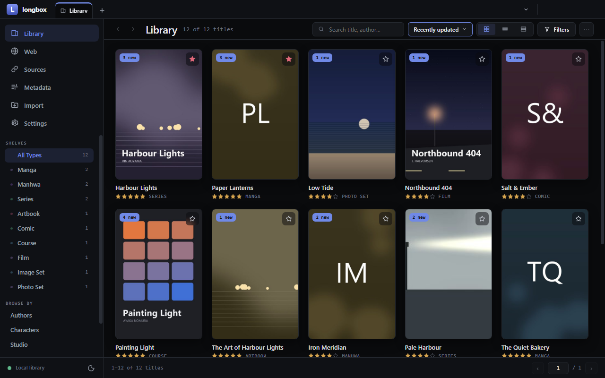
A title is a title whatever it holds: a manga's chapters, a series' episodes, a course's lectures, a photo set's pictures. Each kind gets its own shelf, and everything else is shared — the same fields and filters, the same ratings and progress, the same people, studios and tags, one search. Filter by a tag and the answer is the manga, the series made from it and its artbook, side by side.
Every person, studio, character, genre and tag has a page: its works in every medium, how many you have finished, where they came from, what they travel with — before you write a word. Add a description, links to where an author publishes, an image, and a person's other names, which become rules so every spelling lands as one.
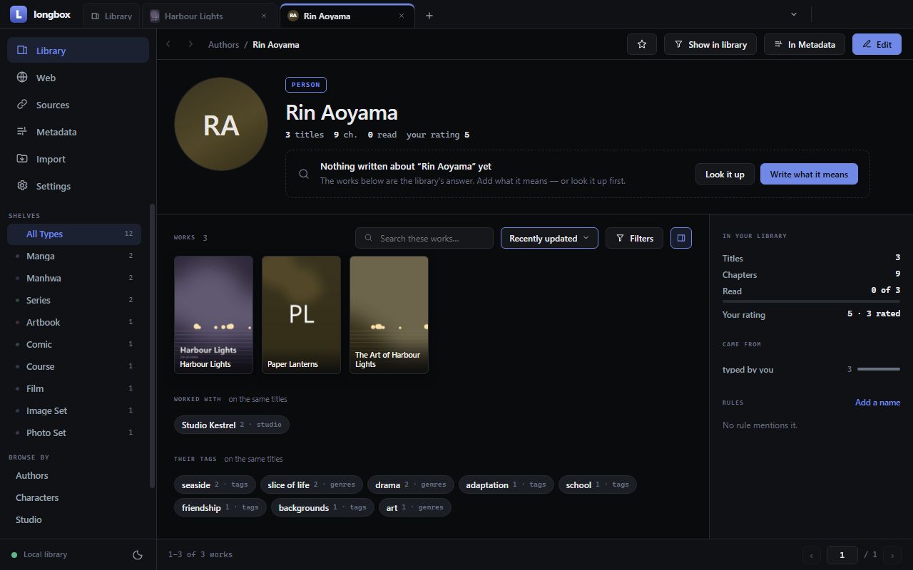
The vault is a plain folder on any disk you like, a network share included, and everything the app keeps lives in it — your fields, recipes and sources, the browser's sign-ins, even the window's preferences. Open it from another computer, under another drive letter, and it is all there.
A title's contents come in four views — a list beside a preview pane, tiles, a wall of cards across the width, or every page of every entry — and the view you pick is remembered for the kind, so series open as series and photo sets as photo sets.
An episode is stored as the file it arrived as, streamed rather than copied, and it remembers where you stopped. Its preview is cut from the file itself: nine frames laid out as a contact sheet, each a link to the second it came from, so you can see what an episode is before playing it and start where you meant to. The frames are stored beside the media, once; there is no decoder in the app — the window that plays the file is what draws them.
Playback is in place on the title page, or in the full window with the episode list beside it. Subtitles — SRT, VTT or ASS, as many tracks as you like — ride with the episode. An mkv plays when its codecs are ones a browser decodes; anything a browser cannot show (avi, mov, ts, an mkv of HEVC) gets a playable copy, made in the background by the bundled ffmpeg and kept beside the original, which is never touched.
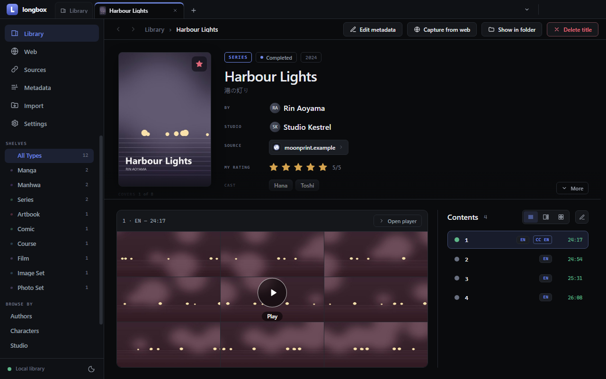
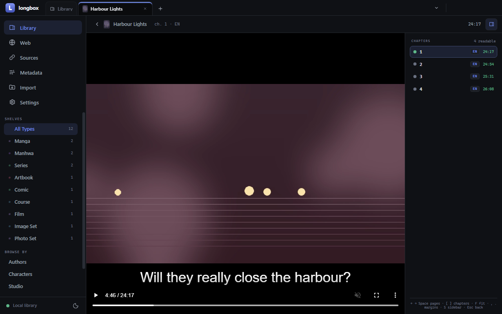
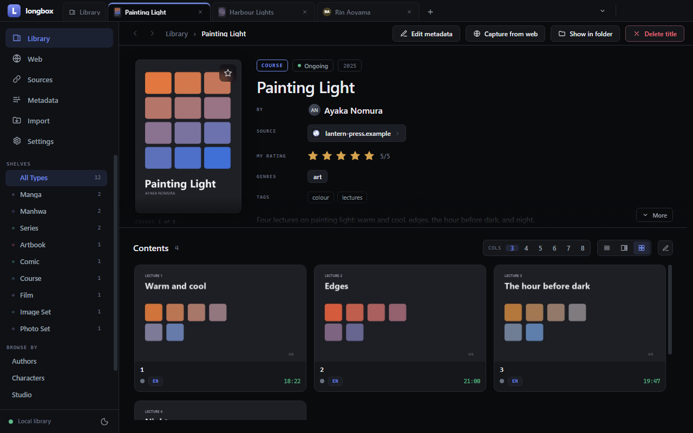
Page mode and continuous strip, fit-to-height / width / custom, adjustable margins, and a hideable rail of page thumbnails. Chapter navigation moves between labels and keeps the translation you were reading; progress is written through instantly. Every shortcut is rebindable, bound to the physical key so it survives a keyboard-layout switch. The reader opens only your vault — so it works offline by construction.
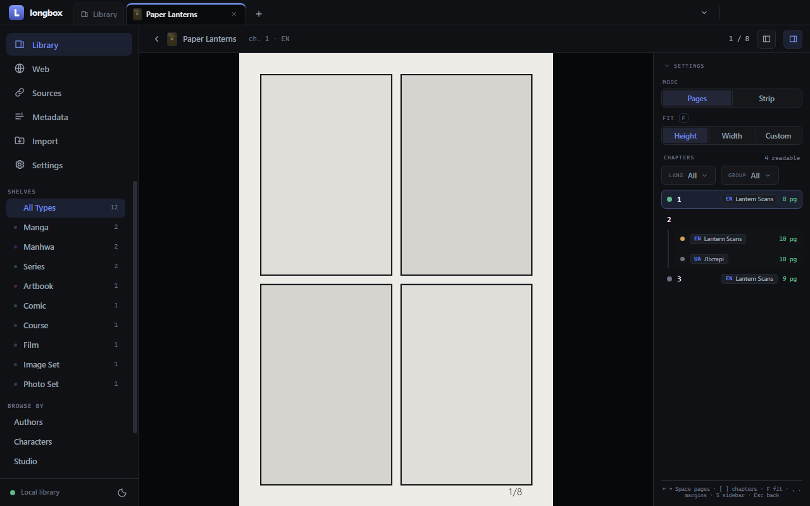
A set of pictures is an entry like any other, so the same view that pages through a chapter lays out a whole photo set at once — every picture of every entry, at the size you choose — and a click opens the reader on that picture.
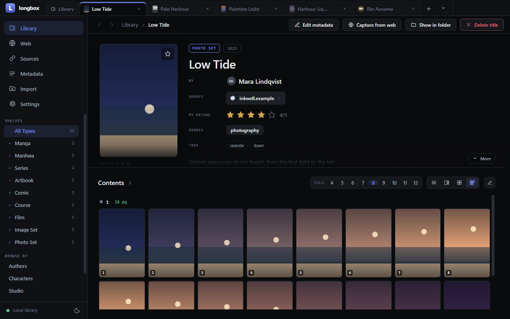
longbox embeds a real browser and lets it behave like one: tabs you can pin, reorder, mute and open in the background, a floating find bar, a page context menu, and the shortcuts your hands already know — F5, Ctrl+F, Ctrl+L, Ctrl+T, Alt+←, Ctrl+1…9 — working over the page itself, not only over the app's chrome. You sign in on the site; the app never sees your password and never fetches anything you did not open. What it does see, it can capture: click an element and refine the selector in the inspector, with a live preview of the exact value that would be stored — including how several matches are joined when the field holds one.
A work whose tags are spread over several pages can have them merged instead of replaced. And when you auto-fill a new draft over a page your library may already hold, longbox says so first — with what each candidate record is, its type and where it came from — rather than quietly creating a second copy of the same work.
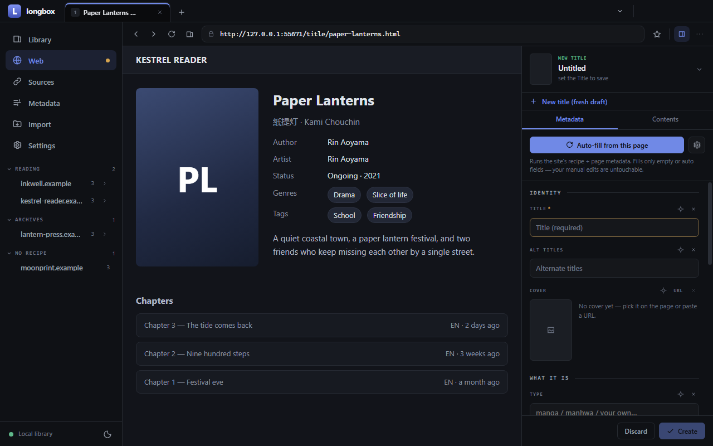
In longbox's own Web tab, on whatever site you use. Sign in there if the site needs it — the app only ever sees the session, never your password.
On a site longbox already knows, the title, alt title, authors, tags, description and cover fill in at once. On a new site nothing is invented: only the page's own metadata is used until you teach the rest.
Click pick next to a field and then the element on the page. The inspector shows what would be stored, right now, for every match. What you teach is remembered for that domain, so the next title from the same site fills itself in.
The title becomes a folder on disk. Fields you typed are marked as yours and no later capture can overwrite them.
Three ways, because sites differ. All three end with the same thing on disk: one plain zip per chapter or set of pictures — or, for an episode, the video itself — with a note recording where it came from.
Name the entry in the dock and press Add + arm download. Then click the site's own download button. longbox catches that download, files it into exactly that entry and records the source. One arm, one download.
zip, cbz, rar and 7z are converted to a plain zip on the way in; a video is kept as it is, and a subtitle file joins its episode.
Switch the dock to Pages, click one page image so longbox learns which images are pages, name the chapter and press Start page capture. Then just read it. Every page you open is fetched and appended, in order.
Pages you already have are never fetched again, so going back a page costs nothing. Finish chapter closes it and offers the next number.
Import reads a folder the way you sorted it — a title per folder, its entries inside — shows the plan before anything moves, and can pause and carry on after a restart. On a title page, drop in an archive, a video, a set of images or a folder.
For scans you made yourself, a backup from another app, or the collection you already have on a disk.
A panel over the app lists every transfer by title and entry with its progress, and any of them can be stopped. Closing the window while something is still coming down warns first: each transfer keeps its place — the part already fetched, the entry it was claiming — so the next launch can pick it up where it stopped, or start it over when the source will not honour that.
Page images are fetched with the embedded browser's own cookies and the reader page as referer — the very same request the page makes for itself. That is why gated chapters and hotlink-protected CDNs work at all, and why nothing works that you could not open yourself.
An entry is a label plus a language and a group, so two translations of chapter 12 — or two dubs of episode 3 — are two rows under one label, each with its own file and its own progress.
A site becomes a source the moment you bookmark a page on it, and waits under NO RECIPE until you teach it one. The Sources page arranges them the way the browser's rail shows them: in groups you name and the order you drag them into, several at a time if you like. Each site has a panel with its homepage, whether the browser offers it, and its saved links — each dated when it was saved — and can count and clear its own cookies, storage and cached pages without touching any other site. Every link of every site also reads as one table, for weeding out duplicates. A site you are done with can be hidden from the browser: it keeps its recipe and its links.
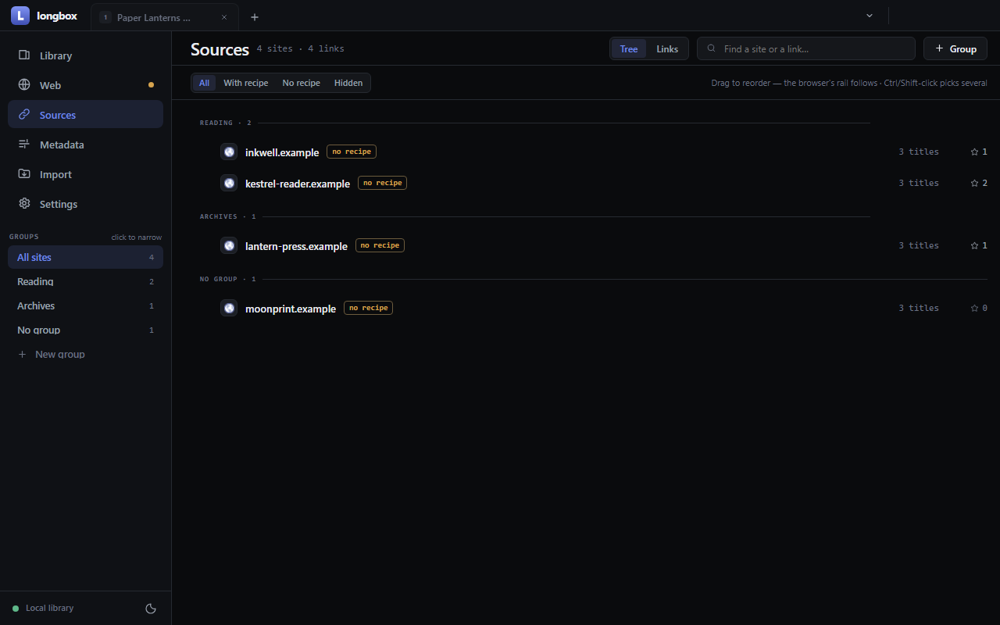
Grid, dense list and expanded views. Linked faceted filters — type, status, genres, tags, language, authors, characters, studio, content flags — with include and exclude, so counts always reflect what is actually left. Shelves narrow by type; Browse by regroups the whole library along any list field, and each shelf keeps its own list of those. Favourites, ratings and progress are a separate layer: editing a title's metadata can never roll them back.
The fields themselves are yours: add your own to the registry — text, description, number, list or date — and decide which appear on title pages, in the filters, and in the capture dock of each source. A type is a promise about the data: a field can stop being a number or a date but never become one, and a list folds into text only on a separator no value contains. Every filled field draws itself on the title page by its type — nothing to wire up per screen.
Metadata keeps that vocabulary in order: every field's values with how many titles hold each — over the whole library, the current filters or a selection. Merge three spellings into one, move a "completed" tag into the status it belongs in, rename a type and its shelf with it. Each change is previewed before anything is written, costs only the titles that actually change, and can be reverted. Rules do the same to values on their way in, so the next capture does not bring the drift back. Or pick titles in the library and edit them at once: every value they hold with how many hold it — add a tag to all, take one away, set a status — and one Apply writes it, undoable.
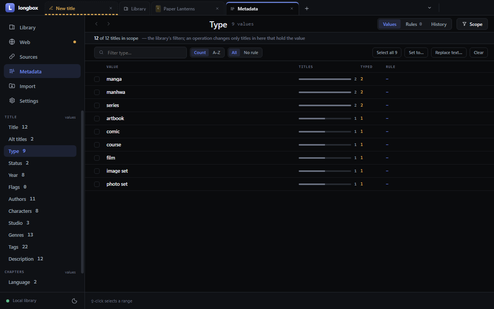
One row per translation, grouped under a shared label, with language and group chips. Edit mode adds entries by hand, attaches or replaces files, imports loose images or a whole folder, moves pages between entries, and reorders pages by dragging. Every metadata field remembers whether it was captured automatically or typed by you — automatic capture can never overwrite your edit.
A title may wear several covers, and the grid fades through them while you hover it; they are added, removed and reordered by dragging in the same editor. One you never gave a cover is not a blank tile: it shows what it actually holds — the first page of each chapter, or an episode's own frame. Every stored file is renamed to its entry, so the name it arrived under is kept with it — hover the entry's file to see it, along with where it came from.
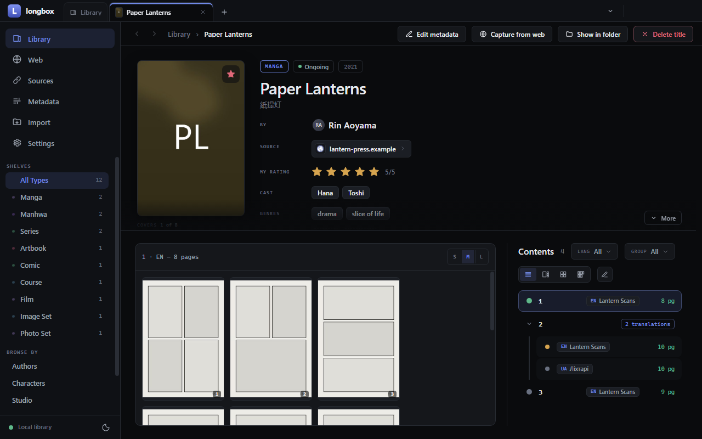
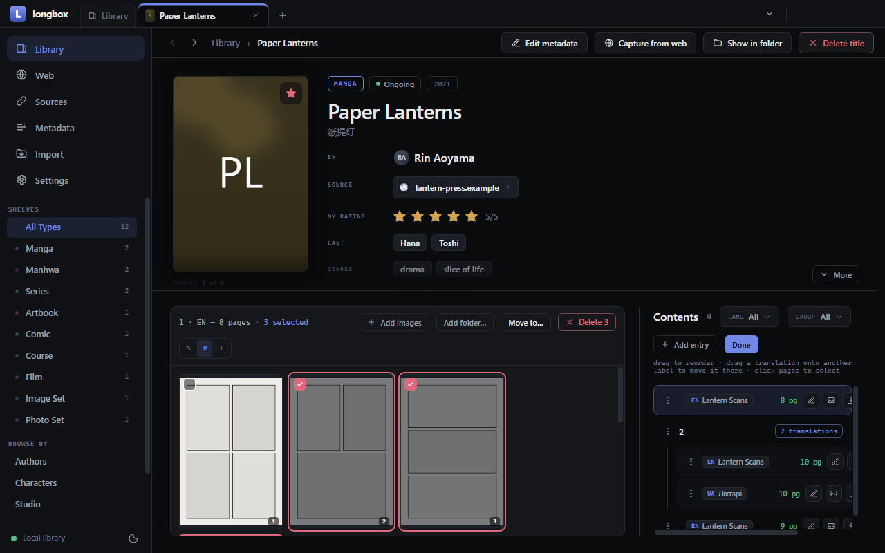
Download, install, open. Everything below happens inside the app — there is nothing to configure on disk and no command line involved.
The first launch asks where: a folder on this disk, another one, or a network drive. Files you already have come in through Import, filed the way you sorted them; nothing is moved that you did not ask to move.
Web → open the title's page on the site → New title in the capture dock → Auto-fill, or pick fields one by one. Save.
Arm a download and click the site's download button, or switch the dock to Pages, teach which images are the pages, and read the chapter through.
Everything after this point is offline. The reader and the player only ever open your own files.
…-windows-x64.exe installer or the portable
…-windows-x64.zip; on macOS the …-macos-arm64.dmg for Apple
silicon or …-macos-x64.dmg for Intel; on Linux the
…-linux-x86_64.AppImage or the …-linux-amd64.deb. Nothing else is
needed; rar archives also want unrar or bsdtar on the
machine.
xattr -dr com.apple.quarantine /Applications/longbox.app. Linux: make
the AppImage executable (chmod +x), or install the .deb.
The folder on disk is the truth; the search index is a cache that can be deleted and rebuilt at any time. Every chapter of pages is a plain zip — CBZ is the same container — so any CBZ reader opens them; archives that arrive as rar or 7z are converted on the way in, and an episode is kept as the video file it arrived as.
Each archive also carries a ComicInfo.xml describing its work, so the library
reads correctly in Komga, Kavita and anything else that speaks the format — it outlives this
app. The file is a mirror, written where an archive is being rewritten anyway; a metadata
edit never silently rewrites gigabytes, and Settings brings the rest in line on demand. An
archive that already describes itself names its own entry on the way in.
library/ index.db rebuildable cache — safe to delete recipes.json what longbox learned about your sites sources.json your sites: groups, bookmarks manga/ paper-lanterns/ title.json metadata · provenance · chapters · your layer cover.jpg the first cover; more as cover-2.jpg, cover-3.jpg… chapters/ ch-1-3f9a0c12.zip the pages, with ComicInfo.xml inside ch-1-3f9a0c12.json source · the name it arrived under · checksums series/ harbour-lights/ title.json chapters/ ch-1-7be41d09.mp4 the episode, kept as the file it arrived as ch-1-7be41d09.sheet.jpg the nine frames its preview shows photo-set/ low-tide/…
| Guarantee | What it means in practice |
|---|---|
| Atomic writes | A write either lands whole or not at all; a crash mid-save cannot leave a half-written title. |
| Your layer is separate | Favourites, ratings and read progress live apart from metadata — a re-capture never touches them. |
| The folder is the library | Recipes, sources, bookmarks, settings, the browser's sign-ins and caches live in it too — copy it to another machine and it arrives whole. The computer keeps only where its vaults are. |
| Nothing is orphaned | Re-capturing a chapter list keeps downloaded files bound to their rows; media is removed only when you say so. |
| Provenance | Each field records whether it came from a site or from you; each downloaded file records its source and the name it arrived under. |
| Checksummed | Every stored file is hashed as it lands — once over every byte, once over its ordered pages — so the vault can later prove what changed. |
.rar needs an unrar (or bsdtar) binary on
your PATH. Without one, longbox leaves the file untouched and tells you — it never rewrites an
archive it cannot read.
Settings → Health runs one check with three answers: is anything broken, is anything wasting space, is anything missing. A quick check compares the disk against the record; a full check re-reads every byte. Either can be stopped, and a report cut short says so. Nothing here runs by itself, and nothing changes your files.
Answers are sentences about files — the file is gone, the file changed since it was stored — and each says what to do about it. Content stored twice is found by what the pages are, not by the file that holds them, so a repack or a renumbering does not hide a duplicate; which copy to keep is your call, never the app's. Numbering gaps are claimed only where the entries provably form a run. Leftovers of interrupted writes are the one thing deleted here — after every one is listed with its size.
What has been done is recorded with the library: when each check ran, how long it took and what it found, with the last report kept in full — so a check that took an hour is still there after a restart.
One section at a time, from a rail that shows what needs you before you open it: Storage (your vaults — everything the app keeps lives in one; opening another restarts into it), Health, Maintenance (rebuild the search index, convert archives, write metadata into them), Fields, Browser (homepage, one-click cookie or cache clearing), Appearance, Keyboard and About. Everything that walks the library shares one slot, one progress bar and one stop button — and leaving the page does not lose what is running.
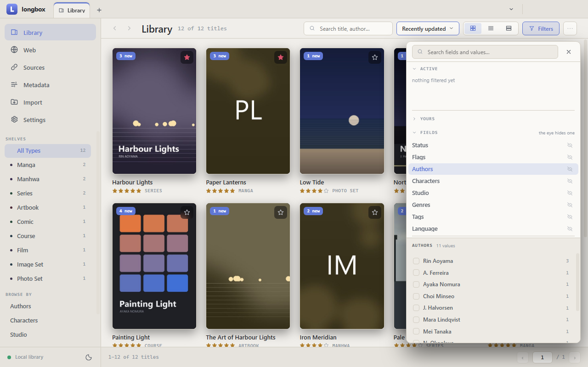